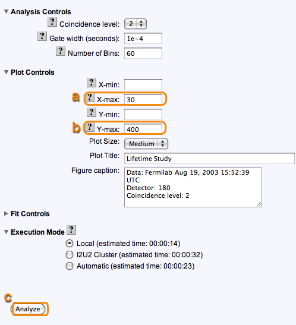
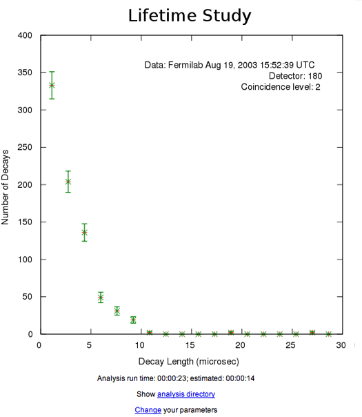
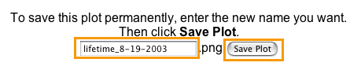

|
Lifetime studies can be pretty tricky and getting the right input parameters
is sometimes hard.
Keep two windows open, one with these instructions and the other with
the lifetime study web pages.
Go back and forth between them.
Use the scroll
bar to move the instructions.
Look for the orange highlights for guidance.
We will recreate the first plot used as Figure 1 in the
poster titled "Possible Particle Decays." You can access it from
posters. The data for this plot is from detector 180 at WALTA (but listed under
Fermilab) and dated 8/19/2003. Fermilab has been entered into the e-Lab as a school even though it does not seem like your typical school name.
|
|
| Step 1: |
Click on the Data button in the main menu. |

|
| |
| Step 2: |
Click on the Lifetime button in the submenu. |
|
|
|
|
| Step 3.1: |
Look at the search page. On the right is a button to run the study and links to a tutorial, step-by-step instructions, FAQs and related milestones. The legend shows icons for information about each data file.
|

|
|
| Step 3.2: |
Search first for a data file from detector 180 on
8/19/2003.
a) Select Detector Id in the pulldown list
b) Enter 180 in the search field
c) Click on the little arrow next to Advanced Search.
|
|
|
| Step 3.3: |
a) Select Start Date in the pulldown list for dates and
enter 8/19/2003 in the first date field.
b) Click Search Data
|

|
|
| Step 3.4: |
a) Click on the little arrow next to "Fermilab" to see the data
files associated with Fermilab.
|

|
|
| Step 3.5: |
a) Click on the little arrow next to "August 2003" to see the
data files for that month.
|

|
|
| |
| Step 4: |
One data file uploaded for August 2003 is displayed. See the data by clicking on the date and additional information by clicking on the comments bubble.
a) Select the data file labeled Tues 19 by clicking
on its checkbox
b) Click Run lifetime study on the right.
|

|
| |
| Step 5: |
Look at the number of events in each channel. Use the default
analysis parameters: Coincidence level of 1, Gate width
of 1e-5 seconds and Number of bins of 40.
Click on the question marks
to learn
more about each of these.
The execution mode is set to "Local." For this example, we
will always execute the analysis on the local machine. You can experiment with how
changing the execution mode to the I2U2 cluster and grid affects how long it takes
to do your analysis. There are some estimates of how much time each might take.
Click Analyze to use these parameters.
|

|
| |
|
|
| Step 5.1: |
If your analysis takes very little time to run, you may get your plot right away. More often, you get a progress bar displaying how the analysis is doing. You can click on Queue study to allow the analysis to go on in the background. |
|
| |
| Step 5.2: |
You can now click on Analyses on the navigation bar or analysis list in the text to see the progress of you job.
|

|
|
|
| Step 5.3: |
When your job is done, you will see an entry on the Analysis List like this. You can click on the link and see the plot.
|
|
|
| Step 6: |
Here's the graph of the lifetime (Number of decays vs. the
length in microseconds.) The longer it takes to decay, the
fewer the number of decays.
Click Change to change the parameters for the
analysis.
|
 |
| |
| Step 7: |
The plot in the poster has the following analysis parameters:
Coincidence level=2, Gate
width: 1 e-4 seconds, and Number of Bins: 60.
a) Choose 2 in the pulldown list for Coincidence level.
b) Change
the Gate width to 1 e-4.
c) Change the number of bins to 60
d) To recreate the
plot, you will need to use the plot controls.
Click on the small
arrow to view the "Plot Controls".
|
|
| |
| Step 8: |
a) Enter 30 for X-max
b) Enter 400 for Y-max
c) Click Analyze.
|
|

|
| |
| Step 9: |
Notice this plot is getting closer to what we want. We now
want to add the fit controls.
Click Change parameters
and go back to the page where you set parameters for the
analysis.
|
|

|
| |
| Step 10: |
The plot in the poster needs the following fit parameters:
a) Click the little arrow to view the Fit Controls.
b) Set Fitting Turned On to Yes
c) Set X-min of fit to .1
d) Set X-max of fit to 100
e) Set Fit Y-intercept to No
f) Set Alpha to 494
g) Set Fit Lifetime to Yes
h) Set Lifetime to 2.0
i) Set Fit Background to Yes
j) Set Background to 1
Click Analyze
|

|
| |
| Step 11: |
Now we have a fit to our curve. This is the plot we want to save.
|

|
| |
| Step 12: |
Enter a name for the plot similar, but not the same as the one
shown and click Save Plot. If you do this tutorial more
than once, choose another name for the plot.
You will have access to this plot for your poster.
|
|

|
| |
| Step 13: |
Note you have successfully saved your plot and click
Close.
You can do more plots for other channels or go back to choosing
a new data set by clicking Lifetime. Anytime you can click
View Plots to see the plots you have made.
|

|